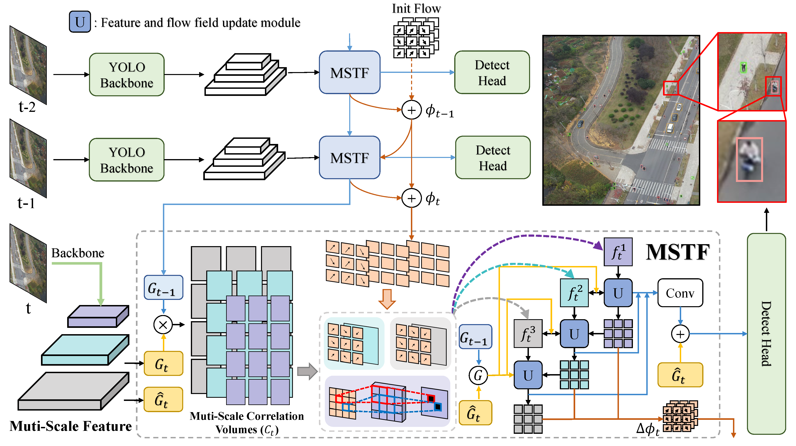
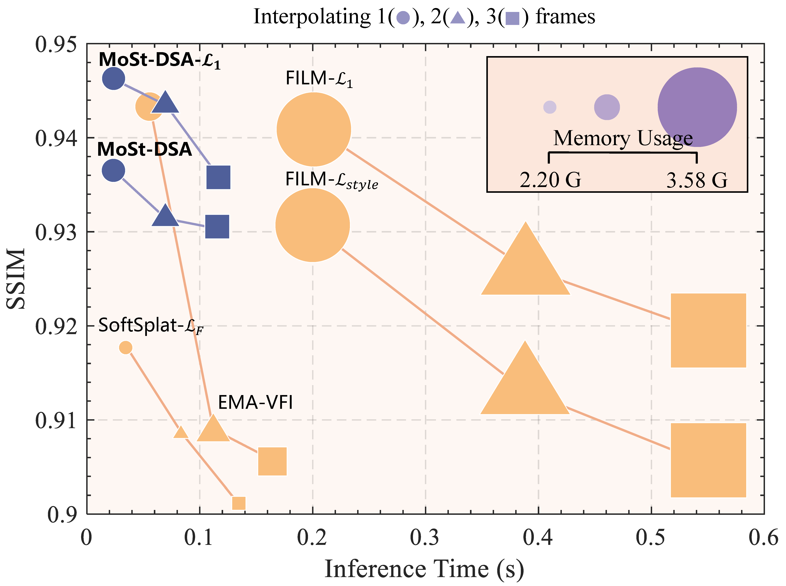

Research
My scholarly interests revolve around the fields of Artificial General Intelligence, Computer Vision, Image/Video Generation, Medical Image Analysis, and Object Detection/Segmentation. Representative papers are highlighted.
|
|
|
Generative AI-based Low-Dose Digital Subtraction Angiography for Intraoperative Radiation Dose Reduction: a Randomized Controlled Trial
Huangxuan Zhao*,
Yaowei Bai*,
Lei Chen*,
Jinqiang Ma*,
Yu Lei*,
Tao Sun,
Linxia Wu,
Ruiheng Zhang,
Ziyang Xu,
Xiaoyun Liang,
Yi Li,
Yan Huang,
Yun Feng,
Cheng Hong,
Zhongrong Miao,
Lin Long,
Haidong Zhu,
Jiahe Zheng,
Lin Fan,
Zhuting Fang,
Peng Dong,
Lefei Zhang,
Xiaoyu Han,
Bin Wang,
Bin Liang,
Xiangwen Xia,
Xuefeng Kan,
Chengcheng Zhu,
Bo Du,
Xinggang Wang,
Chuansheng Zheng
* equal contribution
Through retrospective analyses and iterative system upgrades, we developed GenDSA-v2, which is, to the best of our knowledge, the largest and most comprehensive low-dose imaging system to date. Leveraging a multi-center cohort of 50,000 patients from 86 hospitals worldwide, collected in collaboration with major international vendors (GE, Philips, and Siemens), we demonstrate that GenDSA-v2 achieves a threefold reduction in radiation dose without compromising diagnostic or interventional performance. Its clinical effectiveness and safety were further validated through animal studies and prospective evaluations, including cross-over observational trials and randomized controlled studies, confirming that GenDSA-v2 maintains sufficient image fidelity to visualize lesions as small as 1 mm.
|
|
|
Genesis: Multimodal Driving Scene Generation with Spatio-Temporal and Cross-Modal Consistency
Conference on Neural Information Processing Systems (NeurIPS), 2025
Paper
/
Code
/
Project Page
Xiangyu Guo*,
Zhanqian Wu*,
Kaixin Xiong*,
Ziyang Xu,
Lijun Zhou,
Gangwei Xu,
Shaoqing Xu,
Haiyang Sun,
Bing Wang,
Guang Chen,
Hangjun Ye,
Wenyu Liu,
Xinggang Wang
* equal contribution
To address the problem of complex structural and semantic consistency in image inpainting, we propose a novel paradigm called Latent Categories Guidance (LCG), and further propose PixelHacker, a diffusion model-based image inpainting model. PixelHacker efficiently guides the generation process by introducing latent foreground and background representations to achieve structural and semantic consistency, achieving state-of-the-art performance on multiple benchmarks for natural scenes (Places2), face scenes (CelebA-HQ, and FFHQ).
|
|
|
PixelHacker: Image Inpainting with Structural and Semantic Consistency
Ziyang Xu,
Kangsheng Duan,
Xiaolei Shen,
Zhifeng Ding,
Wenyu Liu,
Xiaohu Ruan,
Xiaoxin Chen,
Xinggang Wang
⚑ This work was done when Ziyang Xu and Kangsheng Duan were interning at VIVO.
To address the problem of complex structural and semantic consistency in image inpainting, we propose a novel paradigm called Latent Categories Guidance (LCG), and further propose PixelHacker, a diffusion model-based image inpainting model. PixelHacker efficiently guides the generation process by introducing latent foreground and background representations to achieve structural and semantic consistency, achieving state-of-the-art performance on multiple benchmarks for natural scenes (Places2), face scenes (CelebA-HQ, and FFHQ).
|
|
|
GaraMoSt: Parallel Multi-Granularity Motion and Structural Modeling for Efficient Multi-Frame Interpolation in DSA Images
AAAI Conference on Artificial Intelligence (AAAI), 2025
Paper
/
Code
Ziyang Xu,
Huangxuan Zhao,
Wenyu Liu,
Xinggang Wang
Compared to our last job MoSt-DSA, GaraMoSt adds multi-granularity motion and structural feature modeling and modifies the overall Pipeline into a highly parallel design, which greatly improves the accuracy and reduces high-frequency and low-frequency noise under the same inference time level (for interpolating 3 frames, only increasing by 0.005s). Comprehensive beyond the SOTA natural scene, and DSA scene methods.
|


|
XS-VID: An Extremely Small Video Object Detection Dataset
Jiahao Guo,
Ziyang Xu,
Lianjun Wu,
Fei Gao,
Wenyu Liu,
Xinggang Wang
XS-VID dataset comprises aerial data from various periods and scenes, and extensively collects three types of objects with smaller pixel areas: extremely small (0-12^2), relatively small (12^2-20^2), and generally small (20^2-32^2). XS-VID offers unprecedented breadth and depth in covering and quantifying minuscule objects, significantly enriching the scene and object diversity in the dataset.
YOLOFT enhances local feature associations and integrates temporal motion features, significantly improving the accuracy and stability of Small Video Object Detection.
|
|
|
Large-scale Pretrained Frame Generative Model Enables Real-Time Low-Dose DSA Imaging: an AI System Development and Multicenter Validation Study
Med (Cell Press), 2024 (IF 17)
Paper
/
Code
Huangxuan Zhao*,
Ziyang Xu*,
Linxia Wu*,
Lei Chen*,
Ziwei Cui,
Jinqiang Ma,
Tao Sun,
Yu Lei,
Nan Wang,
Hongyao Hu,
Yiqing Tan,
Wei Lu,
Wenzhong Yang,
Kaibing Liao,
Gaojun Teng,
Xiaoyun Liang,
Yi Li,
Congcong Feng,
Xiaoyu Han,
P.Matthijs van der Sluij,
Charles B.L.M. Majoie,
Wim H. van Zwam,
Yun Feng,
Theo van Walsum,
Aad van der Lugt,
Wenyu Liu,
Xuefeng Kan,
Ruisheng Su,
Weihua Zhang,
Xinggang Wang,
Chuansheng Zheng
* equal contribution
GenDSA is a large-scale pretrained multi-frame generative model-based real-time and low-dose DSA imaging system, which pre-trained, fine-tuned and tested on ten million of images from 35 hospitals. Suitable for most DSA scanning protocols, GenDSA could reduce the DSA frame rate (i.e., radiation dose) to 1/3 and generates video that was virtually identical to clinically available protocols. Videos generated by GenDSA reach a comparable level to the full-sampled videos, both in terms of overall quality (4.905 vs 4.935) and lesion assessment (4.825 vs 4.860), which fully demonstrated the potential of GenDSA for clinical applications.
|


|
MoSt-DSA: Modeling Motion and Structural Interactions for Direct Multi-Frame Interpolation in DSA Images
European Conference on Artificial Intelligence (ECAI), 2024
Paper
/
Code
Ziyang Xu,
Huangxuan Zhao,
Ziwei Cui,
Wenyu Liu,
Chuansheng Zheng,
Xinggang Wang
MoSt-DSA is the first work that uses deep learning for DSA frame interpolation, comprehensively achieving SOTA in accuracy, speed, visual effect, and memory usage. Meanwhile, MoSt-DSA is also the first method that directly achieves any number of interpolations at any time steps with just one forward pass during both training and testing. If applied clinically, MoSt-DSA can significantly reduce the DSA radiation dose received by doctors and patients when applied clinically, lowering it by 50%, 67%, and 75% when interpolating 1 to 3 frames, respectively.
|
|
{kind=link}